Générée par tools/nordla-icon-tools.py gallery à partir des fichiers réels du dépôt (aucun réseau). Famille de référence : Finance V1. Rien n’est redessiné ni recoloré ; les fichiers validés ne sont jamais modifiés ; les corrections proposées sont des candidats à valider.
46Validées V1
18V1 défectueuses
34V2 conformes (à valider)
75Candidats techniques
93À redessiner
101Fonctions sans icône
31Growth (à arbitrer)
1. Validées — pack officiel V1 (46)
Seules icônes affichées par les écrans. Tailles 16 / 24 / 32 px sous chaque icône.
Navigation et modules 21
aFairenon utilisée par un écranachatsfinanceafterSalesnon utilisée par un écranapprovalnon utilisée par un écranbanqueEtCaissefinance
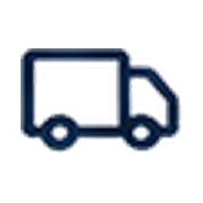
buyingSupplierssourcing (app terrain + /nordla)ceQuiAChangeanalysesclientsanalysescommandCenteranalyses, sourcing (app terrain + /nordla)compliancesourcing (app terrain + /nordla)contactsnon utilisée par un écrandecisionLedgersourcing (app terrain + /nordla)exploreranalyses, sourcing (app terrain + /nordla)governancenon utilisée par un écrangrowthsourcing (app terrain + /nordla)parleANordlasourcing (app terrain + /nordla)produitsdéveloppement des ventes, sourcing (app terrain + /nordla)resumenon utilisée par un écransecuritynon utilisée par un écrantresoreriefinance, sourcing (app terrain + /nordla)ventesfinance, sourcing (app terrain + /nordla)
Performance business 6
baissenon utilisée par un écranchiffreAffairesnon utilisée par un écrancommandesnon utilisée par un écrancroissancenon utilisée par un écranmargeBrutenon utilisée par un écranpanierMoyennon utilisée par un écran
Clients 6
clientARisquenon utilisée par un écranclientDormantanalysesclientFidelenon utilisée par un écrancohortenon utilisée par un écrannouveauClientnon utilisée par un écransegmentClientnon utilisée par un écran
Produits et commerce 6
fournisseursourcing (app terrain + /nordla)meilleurProduitanalysesprixnon utilisée par un écranproduitEnBaissenon utilisée par un écranproduitEnHaussenon utilisée par un écranstocksourcing (app terrain + /nordla)
Interface Core 3
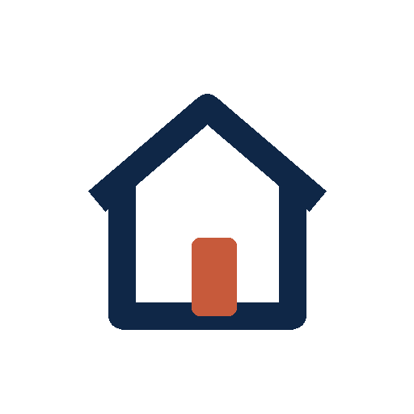
accueilsourcing (app terrain + /nordla)packComptablenon utilisée par un écranparametresfinance, sourcing (app terrain + /nordla)
Utilitaires 4
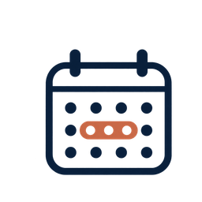
calendrieranalyses, développement des ventesdataHealthanalyses, sourcing (app terrain + /nordla)rechercheanalyses, développement des ventes, financesynchronisationsourcing (app terrain + /nordla)
2. Pack V1 défectueux — jamais affichés (18)
Fichiers expédiés tels quels mais bloqués par le registre (traits coupés, fragments de légende). Montrés ici pour décision.
banquelisted DEFECTIVE: never rendered (clipped / caption fragment); needs a clean re-exportfacturelisted DEFECTIVE: never rendered (clipped / caption fragment); needs a clean re-export
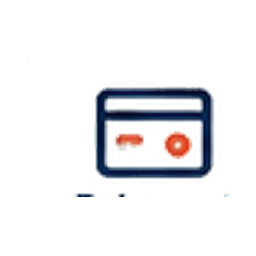
paiementlisted DEFECTIVE: never rendered (clipped / caption fragment); needs a clean re-exportretardlisted DEFECTIVE: never rendered (clipped / caption fragment); needs a clean re-exportvalidationlisted DEFECTIVE: never rendered (clipped / caption fragment); needs a clean re-exportactionRecommandeelisted DEFECTIVE: never rendered (clipped / caption fragment); needs a clean re-exportdonneesAJourlisted DEFECTIVE: never rendered (clipped / caption fragment); needs a clean re-exportdonneesPartielleslisted DEFECTIVE: never rendered (clipped / caption fragment); needs a clean re-exportopportunitelisted DEFECTIVE: never rendered (clipped / caption fragment); needs a clean re-exportprioritelisted DEFECTIVE: never rendered (clipped / caption fragment); needs a clean re-exportrisquelisted DEFECTIVE: never rendered (clipped / caption fragment); needs a clean re-exportassistantlisted DEFECTIVE: never rendered (clipped / caption fragment); needs a clean re-exportdecisionlisted DEFECTIVE: never rendered (clipped / caption fragment); needs a clean re-exportexplicationlisted DEFECTIVE: never rendered (clipped / caption fragment); needs a clean re-exportfiabiliteDonneeslisted DEFECTIVE: never rendered (clipped / caption fragment); needs a clean re-exportinsightlisted DEFECTIVE: never rendered (clipped / caption fragment); needs a clean re-exportrecommandationlisted DEFECTIVE: never rendered (clipped / caption fragment); needs a clean re-export
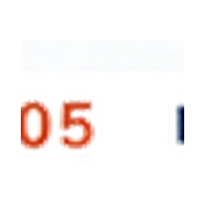
informationlisted DEFECTIVE: never rendered (clipped / caption fragment); needs a clean re-export
3. V2 techniquement conformes — validation graphique en attente (34)
Copies octet pour octet du lot 1, non branchées. Quand une V1 existe, elle est montrée à côté : arbitrage à faire.
V2
Brandingmodule-brandingvalidation graphique en attente
V2
V1 · commandCenter
Centre de pilotagemodule-centre-de-pilotagevalidation graphique en attente · arbitrage V1/V2
V2
V1 · compliance
Conformitémodule-conformitevalidation graphique en attente · arbitrage V1/V2
V2
Créationmodule-creationvalidation graphique en attente
V2
Fournisseursmodule-fournisseursvalidation graphique en attente
V2
V1 · decisionLedger
Journal des décisionsmodule-journal-des-decisionsvalidation graphique en attente · arbitrage V1/V2
V2
V1 · growth
Marketingmodule-marketingvalidation graphique en attente · arbitrage V1/V2
V2
V1 · parleANordla
Parle à Nordlamodule-parle-a-nordlavalidation graphique en attente · arbitrage V1/V2
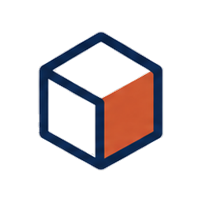
V2
V1 · produits
Produitsmodule-produitsvalidation graphique en attente · arbitrage V1/V2
V2
V1 · afterSales
Service après-ventemodule-service-apres-ventevalidation graphique en attente · arbitrage V1/V2
V2
Stock et achatsmodule-stock-achatsvalidation graphique en attente
V2
Développement des ventesmodule-developpement-des-ventesvalidation graphique en attente
V2
V1 · parametres
Paramètresparametresvalidation graphique en attente · arbitrage V1/V2
V2
Tous les modulestous-les-modulesvalidation graphique en attente
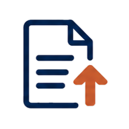
V2
Exporterexportvalidation graphique en attente
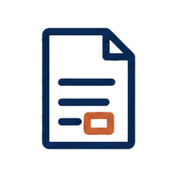
V2
Facturefacturevalidation graphique en attente
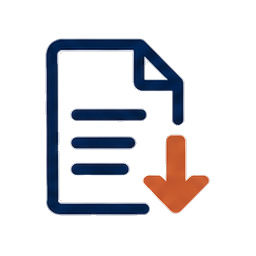
V2
Importerimportvalidation graphique en attente
V2
Paiementpaiementvalidation graphique en attente
V2
Retardretardvalidation graphique en attente
V2
Ajouterajoutervalidation graphique en attente
V2
V1 · recherche
Rechercherrecherchevalidation graphique en attente · arbitrage V1/V2
V2
V1 · security
Sécuritésecuritevalidation graphique en attente · arbitrage V1/V2
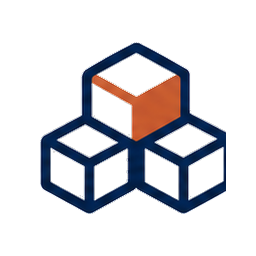
V2
V1 · stock
Stockstockvalidation graphique en attente · arbitrage V1/V2
V2
Détection des opportunitésdetection-opportunitesvalidation graphique en attente
V2
Informationinformationvalidation graphique en attente
V2
Risque / alerterisque-alertevalidation graphique en attente
V2
V1 · approval
Validationvalidationvalidation graphique en attente · arbitrage V1/V2
V2
Notificationsnotificationsvalidation graphique en attente
V2
Donnéesdonneesvalidation graphique en attente
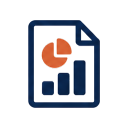
V2
Rapportrapportvalidation graphique en attente
V2
Sauvegardesauvegardevalidation graphique en attente
V2
V1 · synchronisation
Synchronisationsynchronisationvalidation graphique en attente · arbitrage V1/V2
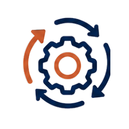
V2
Automatisationautomatisationvalidation graphique en attente
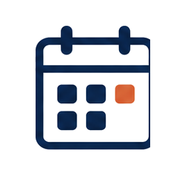
V2
V1 · calendrier
Planningplanningvalidation graphique en attente · arbitrage V1/V2
Fond blanc et résidus de carte retirés (bord reconstruit à partir de la couleur pleine voisine) ou marge transparente ajoutée, sans redessiner, recolorer ni agrandir. Rien n’est branché. Résolution native conservée : nets uniquement jusqu’à la taille indiquée.
avant
après
recuFIX_MARGIN · natif 153×192 · net jusqu’à ≈ 118 px CSSlot 2 « D à G » : traits plus épais et cuivre granuleux (constat de l’audit) : cohérence avec la famille Finance V1 à arbitrercandidat technique — à valider
avant
après
groupe-utilisateursFIX_MARGIN · natif 237×164 · net jusqu’à ≈ 256 px CSSlot 2 « D à G » : traits plus épais et cuivre granuleux (constat de l’audit) : cohérence avec la famille Finance V1 à arbitrercandidat technique — à valider
avant
après
commentaireFIX_MARGIN · natif 192×152 · net jusqu’à ≈ 115 px CSSlot 2 « D à G » : traits plus épais et cuivre granuleux (constat de l’audit) : cohérence avec la famille Finance V1 à arbitrercandidat technique — à valider
avant
après
piece-jointeFIX_MARGIN · natif 159×170 · net jusqu’à ≈ 103 px CSSlot 2 « D à G » : traits plus épais et cuivre granuleux (constat de l’audit) : cohérence avec la famille Finance V1 à arbitrercandidat technique — à valider
avant
après
historiqueFIX_MARGIN · natif 169×167 · net jusqu’à ≈ 101 px CSSlot 2 « D à G » : traits plus épais et cuivre granuleux (constat de l’audit) : cohérence avec la famille Finance V1 à arbitrercandidat technique — à valider
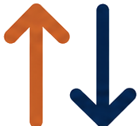
avant
après
triFIX_MARGIN · natif 176×158 · net jusqu’à ≈ 105 px CSSlot 2 « D à G » : traits plus épais et cuivre granuleux (constat de l’audit) : cohérence avec la famille Finance V1 à arbitrercandidat technique — à valider
avant
après
opportuniteFIX_MARGIN · natif 188×170 · net jusqu’à ≈ 113 px CSSlot 2 « D à G » : traits plus épais et cuivre granuleux (constat de l’audit) : cohérence avec la famille Finance V1 à arbitrercandidat technique — à valider
avant
après
factureFIX_BACKGROUND_LOWRES · natif 54×62 · net jusqu’à ≈ 36 px CSScandidat technique — à valider
avant
après
devisFIX_BACKGROUND_LOWRES · natif 92×73 · net jusqu’à ≈ 34 px CSScandidat technique — à valider
avant
après
avoirFIX_BACKGROUND_LOWRES · natif 96×73 · net jusqu’à ≈ 58 px CSScandidat technique — à valider
avant
après
bon-de-commandeFIX_BACKGROUND_LOWRES · natif 92×70 · net jusqu’à ≈ 53 px CSScandidat technique — à valider
avant
après
tvaFIX_BACKGROUND_LOWRES · natif 89×73 · net jusqu’à ≈ 35 px CSScandidat technique — à valider
avant
après
justificatifsFIX_BACKGROUND_LOWRES · natif 87×72 · net jusqu’à ≈ 35 px CSScandidat technique — à valider
avant
après
recuFIX_BACKGROUND_LOWRES · natif 99×73 · net jusqu’à ≈ 35 px CSScandidat technique — à valider
avant
après
reception-documentFIX_BACKGROUND_LOWRES · natif 56×60 · net jusqu’à ≈ 35 px CSScandidat technique — à valider
avant
après
ticketFIX_BACKGROUND_LOWRES · natif 52×60 · net jusqu’à ≈ 35 px CSScandidat technique — à valider
avant
après
ajouterFIX_BACKGROUND_LOWRES · natif 62×60 · net jusqu’à ≈ 36 px CSScandidat technique — à valider
avant
après
menu-plusFIX_BACKGROUND_LOWRES · natif 71×48 · net jusqu’à ≈ 42 px CSScandidat technique — à valider
avant
après
modifierFIX_BACKGROUND_LOWRES · natif 64×63 · net jusqu’à ≈ 38 px CSScandidat technique — à valider
avant
après
dupliquerFIX_BACKGROUND_LOWRES · natif 61×59 · net jusqu’à ≈ 36 px CSScandidat technique — à valider
avant
après
supprimerFIX_BACKGROUND_LOWRES · natif 50×60 · net jusqu’à ≈ 35 px CSScandidat technique — à valider
avant
après
retourFIX_BACKGROUND_LOWRES · natif 65×45 · net jusqu’à ≈ 38 px CSScandidat technique — à valider
avant
après
fermerFIX_BACKGROUND_LOWRES · natif 106×74 · net jusqu’à ≈ 38 px CSScandidat technique — à valider
avant
après
rechercheFIX_BACKGROUND_LOWRES · natif 110×74 · net jusqu’à ≈ 36 px CSScandidat technique — à valider
avant
après
filtreFIX_BACKGROUND_LOWRES · natif 102×74 · net jusqu’à ≈ 33 px CSScandidat technique — à valider
avant
après
triFIX_BACKGROUND_LOWRES · natif 100×74 · net jusqu’à ≈ 26 px CSScandidat technique — à valider
avant
après
telechargerFIX_BACKGROUND_LOWRES · natif 104×74 · net jusqu’à ≈ 34 px CSScandidat technique — à valider
avant
après
partagerFIX_BACKGROUND_LOWRES · natif 101×74 · net jusqu’à ≈ 33 px CSScandidat technique — à valider
avant
après
utilisateurFIX_BACKGROUND_LOWRES · natif 59×64 · net jusqu’à ≈ 38 px CSScandidat technique — à valider
avant
après
profilFIX_BACKGROUND_LOWRES · natif 70×61 · net jusqu’à ≈ 41 px CSScandidat technique — à valider
avant
après
sessionFIX_BACKGROUND_LOWRES · natif 110×76 · net jusqu’à ≈ 41 px CSScandidat technique — à valider
avant
après
parametresFIX_BACKGROUND_LOWRES · natif 102×75 · net jusqu’à ≈ 38 px CSScandidat technique — à valider
avant
après
securiteFIX_BACKGROUND_LOWRES · natif 99×76 · net jusqu’à ≈ 38 px CSScandidat technique — à valider
avant
après
accesFIX_BACKGROUND_LOWRES · natif 103×72 · net jusqu’à ≈ 36 px CSScandidat technique — à valider
avant
après
rolesFIX_BACKGROUND_LOWRES · natif 112×76 · net jusqu’à ≈ 40 px CSScandidat technique — à valider
avant
après
notificationsFIX_BACKGROUND_LOWRES · natif 112×76 · net jusqu’à ≈ 41 px CSScandidat technique — à valider
avant
après
confidentialiteFIX_BACKGROUND_LOWRES · natif 108×67 · net jusqu’à ≈ 41 px CSScandidat technique — à valider
avant
après
crmFIX_BACKGROUND_LOWRES · natif 103×60 · net jusqu’à ≈ 60 px CSScandidat technique — à valider
avant
après
clientFIX_BACKGROUND_LOWRES · natif 95×60 · net jusqu’à ≈ 55 px CSScandidat technique — à valider
avant
après
nouveau-clientFIX_BACKGROUND_LOWRES · natif 98×60 · net jusqu’à ≈ 57 px CSScandidat technique — à valider
avant
après
commande-clientFIX_BACKGROUND_LOWRES · natif 111×60 · net jusqu’à ≈ 43 px CSScandidat technique — à valider
avant
après
panierFIX_BACKGROUND_LOWRES · natif 109×60 · net jusqu’à ≈ 47 px CSScandidat technique — à valider
avant
après
retour-clientFIX_BACKGROUND_LOWRES · natif 70×55 · net jusqu’à ≈ 41 px CSScandidat technique — à valider
avant
après
satisfactionFIX_BACKGROUND_LOWRES · natif 63×60 · net jusqu’à ≈ 37 px CSScandidat technique — à valider
avant
après
fideliteFIX_BACKGROUND_LOWRES · natif 55×51 · net jusqu’à ≈ 32 px CSScandidat technique — à valider
avant
après
fournisseurFIX_BACKGROUND_LOWRES · natif 61×51 · net jusqu’à ≈ 36 px CSScandidat technique — à valider
avant
après
nouveau-fournisseurFIX_BACKGROUND_LOWRES · natif 59×49 · net jusqu’à ≈ 35 px CSScandidat technique — à valider
avant
après
achatFIX_BACKGROUND_LOWRES · natif 67×53 · net jusqu’à ≈ 40 px CSScandidat technique — à valider
avant
après
demande-achatFIX_BACKGROUND_LOWRES · natif 66×62 · net jusqu’à ≈ 39 px CSScandidat technique — à valider
avant
après
reception-marchandiseFIX_BACKGROUND_LOWRES · natif 64×62 · net jusqu’à ≈ 38 px CSScandidat technique — à valider
avant
après
livraisonFIX_BACKGROUND_LOWRES · natif 99×52 · net jusqu’à ≈ 60 px CSScandidat technique — à valider
avant
après
comparerFIX_BACKGROUND_LOWRES · natif 93×62 · net jusqu’à ≈ 54 px CSScandidat technique — à valider
avant
après
visite-fournisseurFIX_BACKGROUND_LOWRES · natif 73×61 · net jusqu’à ≈ 43 px CSScandidat technique — à valider
avant
après
negociationFIX_BACKGROUND_LOWRES · natif 80×59 · net jusqu’à ≈ 48 px CSScandidat technique — à valider
avant
après
catalogueFIX_BACKGROUND_LOWRES · natif 68×57 · net jusqu’à ≈ 40 px CSScandidat technique — à valider
avant
après
tarifsFIX_BACKGROUND_LOWRES · natif 59×56 · net jusqu’à ≈ 35 px CSScandidat technique — à valider
avant
après
contratFIX_BACKGROUND_LOWRES · natif 65×59 · net jusqu’à ≈ 38 px CSScandidat technique — à valider
avant
après
stockFIX_BACKGROUND_LOWRES · natif 93×62 · net jusqu’à ≈ 41 px CSScandidat technique — à valider
avant
après
produitFIX_BACKGROUND_LOWRES · natif 92×62 · net jusqu’à ≈ 33 px CSScandidat technique — à valider
avant
après
categoriesFIX_BACKGROUND_LOWRES · natif 97×62 · net jusqu’à ≈ 56 px CSScandidat technique — à valider
avant
après
inventaireFIX_BACKGROUND_LOWRES · natif 94×62 · net jusqu’à ≈ 36 px CSScandidat technique — à valider
avant
après
entree-stockFIX_BACKGROUND_LOWRES · natif 105×62 · net jusqu’à ≈ 39 px CSScandidat technique — à valider
avant
après
sortie-stockFIX_BACKGROUND_LOWRES · natif 103×62 · net jusqu’à ≈ 60 px CSScandidat technique — à valider
avant
après
emplacementFIX_BACKGROUND_LOWRES · natif 48×57 · net jusqu’à ≈ 35 px CSScandidat technique — à valider
avant
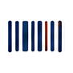
après
code-barresFIX_BACKGROUND_LOWRES · natif 76×48 · net jusqu’à ≈ 45 px CSScandidat technique — à valider
avant
après
scanFIX_BACKGROUND_LOWRES · natif 65×55 · net jusqu’à ≈ 38 px CSScandidat technique — à valider
avant
après
insightFIX_BACKGROUND_LOWRES · natif 95×63 · net jusqu’à ≈ 38 px CSScandidat technique — à valider
avant
après
recommandationFIX_BACKGROUND_LOWRES · natif 58×59 · net jusqu’à ≈ 36 px CSScandidat technique — à valider
avant
après
decisionFIX_BACKGROUND_LOWRES · natif 71×60 · net jusqu’à ≈ 42 px CSScandidat technique — à valider
avant
après
action-recommandeeFIX_BACKGROUND_LOWRES · natif 49×60 · net jusqu’à ≈ 36 px CSScandidat technique — à valider
avant
après
prioriteFIX_BACKGROUND_LOWRES · natif 97×63 · net jusqu’à ≈ 37 px CSScandidat technique — à valider
avant
après
explicationFIX_BACKGROUND_LOWRES · natif 62×63 · net jusqu’à ≈ 39 px CSScandidat technique — à valider
avant
après
donnees-a-jourFIX_BACKGROUND_LOWRES · natif 64×57 · net jusqu’à ≈ 38 px CSScandidat technique — à valider
avant
après
donnees-partiellesFIX_BACKGROUND_LOWRES · natif 56×55 · net jusqu’à ≈ 33 px CSScandidat technique — à valider
avant
après
analyseFIX_BACKGROUND_LOWRES · natif 90×60 · net jusqu’à ≈ 35 px CSScandidat technique — à valider
5. À redessiner par l’équipe créative — 93 fichiers reçus
Défauts qu’aucun traitement d’image ne peut réparer sans inventer du dessin (trait manquant, couleur hors famille, légende, texte seul).
Financetrait coupétrait coupé (pile de pièces à droite)Assistants et automatisationstrait coupétrait coupé (engrenage à droite)Centre des connexionstrait coupétrait coupé (nœuds à droite)Parle à Nordlatrait coupétrait coupé (étincelle à droite)Validationtrait coupétrait coupé (cercle à droite)Phototrait coupétrait coupé (côté droit)Achattrait coupétrait coupé (pastille en haut à droite)Livraisontrait coupétrait coupé (avant du camion)
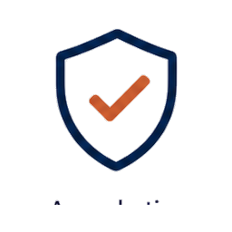
Approbation du propriétairelégende intégréefragment de légende en basDossier fournisseurtrait coupétrait coupé (côté droit); fragment de légende en bas
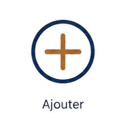
Ajouteraccent ou couleur hors famillelégende intégrée au pictogramme; accent brun différent des dossiers 01–06
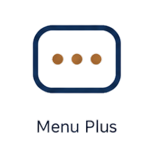
Menu « Plus »accent ou couleur hors famillelégende intégrée au pictogramme; accent brun différent des dossiers 01–06Retouraccent ou couleur hors famillelégende intégrée au pictogramme; accent brun différent des dossiers 01–06
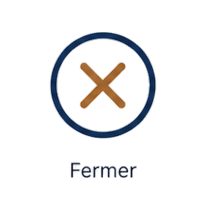
Fermeraccent ou couleur hors famillelégende intégrée au pictogramme; accent brun différent des dossiers 01–06
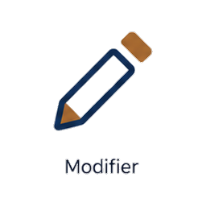
Modifieraccent ou couleur hors famillelégende intégrée au pictogramme; accent brun différent des dossiers 01–06
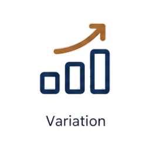
Variationaccent ou couleur hors famillelégende intégrée au pictogramme; accent brun différent des dossiers 01–06
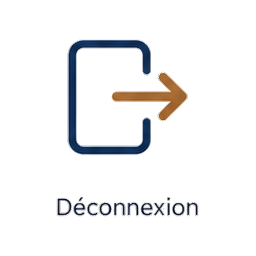
Déconnexionaccent ou couleur hors famillelégende intégrée au pictogramme; accent brun différent des dossiers 01–06
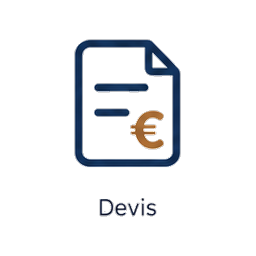
Devisaccent ou couleur hors famillelégende intégrée au pictogramme; accent brun différent des dossiers 01–06
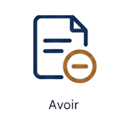
Avoir / note de créditaccent ou couleur hors famillelégende intégrée au pictogramme; accent brun différent des dossiers 01–06
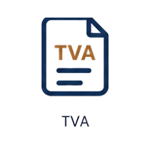
TVAaccent ou couleur hors famillelégende intégrée au pictogramme; accent brun différent des dossiers 01–06Justificatifsaccent ou couleur hors famillelégende intégrée au pictogramme; accent brun différent des dossiers 01–06Documents reçusaccent ou couleur hors famillelégende intégrée au pictogramme; accent brun différent des dossiers 01–06
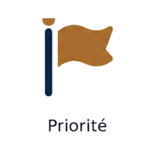
Prioritéaccent ou couleur hors famillelégende intégrée au pictogramme; accent brun différent des dossiers 01–06Insightaccent ou couleur hors famillelégende intégrée au pictogramme; accent brun différent des dossiers 01–06Explicationaccent ou couleur hors famillelégende intégrée au pictogramme; accent brun différent des dossiers 01–06Recommandationaccent ou couleur hors famillelégende intégrée au pictogramme; accent brun différent des dossiers 01–06Décisionaccent ou couleur hors famillelégende intégrée au pictogramme; accent brun différent des dossiers 01–06Action recommandéeaccent ou couleur hors famillelégende intégrée au pictogramme; accent brun différent des dossiers 01–06Données à jouraccent ou couleur hors famillelégende intégrée au pictogramme; accent brun différent des dossiers 01–06
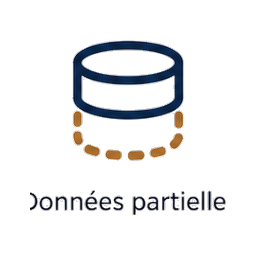
Données partiellesaccent ou couleur hors famillelégende intégrée au pictogramme; accent brun différent des dossiers 01–06
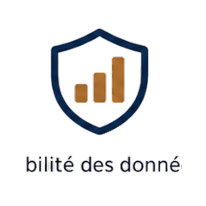
Fiabilité des donnéesaccent ou couleur hors famillelégende intégrée au pictogramme; accent brun différent des dossiers 01–06
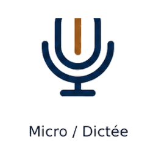
Micro / dictéeaccent ou couleur hors famillelégende intégrée au pictogramme; accent brun différent des dossiers 01–06Visite fournisseurtrait coupélégende intégrée au pictogramme; accent brun différent des dossiers 01–06; trait coupé (côté droit)
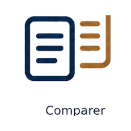
Comparertrait coupélégende intégrée au pictogramme; accent brun différent des dossiers 01–06; trait coupé (côté droit)
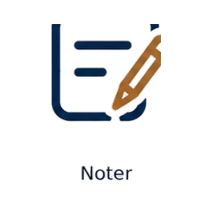
Notertrait coupélégende intégrée au pictogramme; accent brun différent des dossiers 01–06; trait coupé (côté droit)Nous contactertrait coupélégende intégrée au pictogramme; accent brun différent des dossiers 01–06; trait coupé (côté droit)
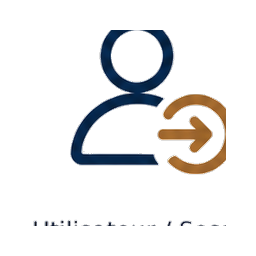
Session utilisateurtrait coupélégende intégrée au pictogramme; accent brun différent des dossiers 01–06; trait coupé (côté droit)Envoyétrait coupélégende intégrée au pictogramme; accent brun différent des dossiers 01–06; trait coupé (côté droit)Bon de commandetrait coupérecadré au ras (marge nulle); trait coupé (bord inférieur ou latéral)Avoir / note de crédittrait coupérecadré au ras (marge nulle); trait coupé (bord inférieur ou latéral)Remboursementtrait coupérecadré au ras (marge nulle); trait coupé (bord inférieur ou latéral)Échéancetrait coupérecadré au ras (marge nulle); trait coupé (bord inférieur ou latéral)Budgettrait coupérecadré au ras (marge nulle); trait coupé (bord inférieur ou latéral)Rentabilitétrait coupérecadré au ras (marge nulle); trait coupé (bord inférieur ou latéral)Margetrait coupérecadré au ras (marge nulle); trait coupé (bord inférieur ou latéral)Rôles et accèstrait coupérecadré au ras (marge nulle); trait coupé (bord inférieur ou latéral)Permissiontrait coupérecadré au ras (marge nulle); trait coupé (bord inférieur ou latéral)Partagertrait coupérecadré au ras (marge nulle); trait coupé (bord inférieur ou latéral)Aidetrait coupérecadré au ras (marge nulle); trait coupé (bord inférieur ou latéral)Filtrertrait coupérecadré au ras (marge nulle); trait coupé (bord inférieur ou latéral)
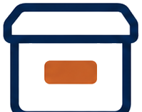
Archivertrait coupérecadré au ras (marge nulle); trait coupé (bord inférieur ou latéral)Imprimertrait coupérecadré au ras (marge nulle); trait coupé (bord inférieur ou latéral)
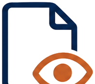
Aperçutrait coupérecadré au ras (marge nulle); trait coupé (bord inférieur ou latéral)Tâchetrait coupérecadré au ras (marge nulle); trait coupé (bord inférieur ou latéral)
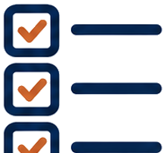
Liste de contrôletrait coupérecadré au ras (marge nulle); trait coupé (bord inférieur ou latéral)Verrouillertrait coupérecadré au ras (marge nulle); trait coupé (bord inférieur ou latéral)Clienttrait coupérecadré au ras (marge nulle); trait coupé (bord inférieur ou latéral); aucun accent cuivreProspecttrait coupérecadré au ras (marge nulle); trait coupé (bord inférieur ou latéral)Pipeline commercialtrait coupérecadré au ras (marge nulle); trait coupé (bord inférieur ou latéral)Commande clienttrait coupérecadré au ras (marge nulle); trait coupé (bord inférieur ou latéral)Paiement reçutrait coupérecadré au ras (marge nulle); trait coupé (bord inférieur ou latéral)Livraison clienttrait coupérecadré au ras (marge nulle); trait coupé (bord inférieur ou latéral)Fidélité / fidélisationtrait coupérecadré au ras (marge nulle); trait coupé (bord inférieur ou latéral)Paiementtrait coupébasse résolution (≤ 112 px, flou à 48–64 px); résidus de carte / fond blanc opaque; trait coupéDocuments reçustrait coupébasse résolution (≤ 112 px, flou à 48–64 px); résidus de carte / fond blanc opaque; trait coupéDocuments envoyéstrait coupébasse résolution (≤ 112 px, flou à 48–64 px); résidus de carte / fond blanc opaque; trait coupéImportertrait coupébasse résolution (≤ 112 px, flou à 48–64 px); résidus de carte / fond blanc opaque; trait coupéExportertrait coupébasse résolution (≤ 112 px, flou à 48–64 px); résidus de carte / fond blanc opaque; trait coupéÉquipe / groupetrait coupébasse résolution (≤ 112 px, flou à 48–64 px); résidus de carte / fond blanc opaque; trait coupéDéconnexiontrait coupébasse résolution (≤ 112 px, flou à 48–64 px); résidus de carte / fond blanc opaque; trait coupéHistoriquetrait coupébasse résolution (≤ 112 px, flou à 48–64 px); résidus de carte / fond blanc opaque; trait coupéVentestrait coupébasse résolution (≤ 112 px, flou à 48–64 px); résidus de carte / fond blanc opaque; trait coupéSuivi de commandetrait coupébasse résolution (≤ 112 px, flou à 48–64 px); résidus de carte / fond blanc opaque; trait coupéDevis clienttrait coupébasse résolution (≤ 112 px, flou à 48–64 px); résidus de carte / fond blanc opaque; trait coupéFacturationtrait coupébasse résolution (≤ 112 px, flou à 48–64 px); résidus de carte / fond blanc opaque; trait coupéVariantestrait coupébasse résolution (≤ 112 px, flou à 48–64 px); résidus de carte / fond blanc opaque; trait coupéMouvement de stocklégende intégréebasse résolution (≤ 112 px, flou à 48–64 px); résidus de carte / fond blanc opaque; légende intégrée au pictogrammeStock faibletrait coupébasse résolution (≤ 112 px, flou à 48–64 px); résidus de carte / fond blanc opaque; trait coupéAssistant IAlégende intégréebasse résolution (≤ 112 px, flou à 48–64 px); résidus de carte / fond blanc opaque; légende intégrée au pictogrammeOpportunitéaccent ou couleur hors famillebasse résolution (≤ 112 px, flou à 48–64 px); résidus de carte / fond blanc opaque; couleur hors famille (rouge sombre)Fiabilité des donnéeslégende intégréebasse résolution (≤ 112 px, flou à 48–64 px); résidus de carte / fond blanc opaque; légende intégrée au pictogrammeParle à Nordlatexte seul, aucun pictogrammetexte seul, aucun pictogrammeNous contactertexte seul, aucun pictogrammetexte seul, aucun pictogrammeE-mailtexte seul, aucun pictogrammetexte seul, aucun pictogrammeEnvoyétexte seul, aucun pictogrammetexte seul, aucun pictogrammeMessagetexte seul, aucun pictogrammetexte seul, aucun pictogrammeSupporttexte seul, aucun pictogrammetexte seul, aucun pictogrammeService après-ventetexte seul, aucun pictogrammetexte seul, aucun pictogrammeAidetexte seul, aucun pictogrammetexte seul, aucun pictogrammeCentre d'aidetexte seul, aucun pictogrammetexte seul, aucun pictogrammeTutorieltexte seul, aucun pictogrammetexte seul, aucun pictogrammeAvis / feedbacktexte seul, aucun pictogrammetexte seul, aucun pictogrammeSignalementtexte seul, aucun pictogrammetexte seul, aucun pictogramme
6. Fonctions sans aucune icône utilisable — 101
À créer en SVG par l’équipe créative dans la famille Finance (décision du 2026-10-17). P0 = bloquant pour les écrans actuels.
P0 3
Menu « Plus »menu-plusNavigation et actionsFIX_BACKGROUND_LOWRES, NEEDS_REDRAW_COLOUR
PhotophotoNavigation et actionsNEEDS_REDRAW_CLIPPED
Assistant IAassistant-iaIntelligence et décisionsNEEDS_REDRAW_CAPTION
P1 37
DevisdevisFinance et documentsFIX_BACKGROUND_LOWRES, NEEDS_REDRAW_COLOUR
Avoir / note de créditavoirFinance et documentsFIX_BACKGROUND_LOWRES, NEEDS_REDRAW_CLIPPED, NEEDS_REDRAW_COLOUR
TVAtvaFinance et documentsFIX_BACKGROUND_LOWRES, NEEDS_REDRAW_COLOUR
JustificatifsjustificatifsFinance et documentsFIX_BACKGROUND_LOWRES, NEEDS_REDRAW_COLOUR
Documents reçusdocuments-recusFinance et documentsNEEDS_REDRAW_CLIPPED, NEEDS_REDRAW_COLOUR
ReçurecuFinance et documentsFIX_BACKGROUND_LOWRES, FIX_MARGIN
Ticket de caisseticketFinance et documentsFIX_BACKGROUND_LOWRES
Bon de commandebon-de-commandeFinance et documentsFIX_BACKGROUND_LOWRES, NEEDS_REDRAW_CLIPPED
ÉchéanceecheanceFinance et documentsNEEDS_REDRAW_CLIPPED
Paiement reçupaiement-recuFinance et documentsNEEDS_REDRAW_CLIPPED
RetourretourNavigation et actionsFIX_BACKGROUND_LOWRES, NEEDS_REDRAW_COLOUR
FermerfermerNavigation et actionsFIX_BACKGROUND_LOWRES, NEEDS_REDRAW_COLOUR
ModifiermodifierNavigation et actionsFIX_BACKGROUND_LOWRES, NEEDS_REDRAW_COLOUR
FiltrerfiltreNavigation et actionsFIX_BACKGROUND_LOWRES, NEEDS_REDRAW_CLIPPED
VariationvariationNavigation et actionsNEEDS_REDRAW_COLOUR
DéconnexiondeconnexionUtilisateurs et sécuritéNEEDS_REDRAW_CLIPPED, NEEDS_REDRAW_COLOUR
Nouveau fournisseurnouveau-fournisseurFournisseurs et achatsFIX_BACKGROUND_LOWRES
Demande d'achatdemande-achatFournisseurs et achatsFIX_BACKGROUND_LOWRES
Réception de marchandisereception-marchandiseFournisseurs et achatsFIX_BACKGROUND_LOWRES
ComparercomparerFournisseurs et achatsFIX_BACKGROUND_LOWRES, NEEDS_REDRAW_CLIPPED
Visite fournisseurvisite-fournisseurFournisseurs et achatsFIX_BACKGROUND_LOWRES, NEEDS_REDRAW_CLIPPED
Dossier fournisseurdossier-fournisseurFournisseurs et achatsNEEDS_REDRAW_CLIPPED
ProduitproduitStock et produitsFIX_BACKGROUND_LOWRES
InventaireinventaireStock et produitsFIX_BACKGROUND_LOWRES
Mouvement de stockmouvement-stockStock et produitsNEEDS_REDRAW_CAPTION
EmplacementemplacementStock et produitsFIX_BACKGROUND_LOWRES
InsightinsightIntelligence et décisionsFIX_BACKGROUND_LOWRES, NEEDS_REDRAW_COLOUR
RecommandationrecommandationIntelligence et décisionsFIX_BACKGROUND_LOWRES, NEEDS_REDRAW_COLOUR
DécisiondecisionIntelligence et décisionsFIX_BACKGROUND_LOWRES, NEEDS_REDRAW_COLOUR
OpportunitéopportuniteIntelligence et décisionsFIX_MARGIN, NEEDS_REDRAW_COLOUR
PrioritéprioriteIntelligence et décisionsFIX_BACKGROUND_LOWRES, NEEDS_REDRAW_COLOUR
ExplicationexplicationIntelligence et décisionsFIX_BACKGROUND_LOWRES, NEEDS_REDRAW_COLOUR
Approbation du propriétaireapprobation-proprietaireIntelligence et décisionsNEEDS_REDRAW_CAPTION
Micro / dictéemicro-dicteeCommunication et supportNEEDS_REDRAW_COLOUR
Données à jourdonnees-a-jourDonnées et systèmeFIX_BACKGROUND_LOWRES, NEEDS_REDRAW_COLOUR
Données partiellesdonnees-partiellesDonnées et systèmeFIX_BACKGROUND_LOWRES, NEEDS_REDRAW_COLOUR
NoternoterOrganisation et automatisationsNEEDS_REDRAW_CLIPPED
P2 61
Assistants et automatisationsmodule-assistants-automatisationsModules principauxNEEDS_REDRAW_CLIPPED
Centre des connexionsmodule-centre-des-connexionsModules principauxNEEDS_REDRAW_CLIPPED
Documents envoyésdocuments-envoyesFinance et documentsNEEDS_REDRAW_CLIPPED
Réception de documentreception-documentFinance et documentsFIX_BACKGROUND_LOWRES
RemboursementremboursementFinance et documentsNEEDS_REDRAW_CLIPPED
BudgetbudgetFinance et documentsNEEDS_REDRAW_CLIPPED
RentabilitérentabiliteFinance et documentsNEEDS_REDRAW_CLIPPED
FacturationfacturationFinance et documentsNEEDS_REDRAW_CLIPPED
DupliquerdupliquerNavigation et actionsFIX_BACKGROUND_LOWRES
SupprimersupprimerNavigation et actionsFIX_BACKGROUND_LOWRES
TriertriNavigation et actionsFIX_BACKGROUND_LOWRES, FIX_MARGIN
TéléchargertelechargerNavigation et actionsFIX_BACKGROUND_LOWRES
PartagerpartagerNavigation et actionsFIX_BACKGROUND_LOWRES, NEEDS_REDRAW_CLIPPED
UtilisateurutilisateurUtilisateurs et sécuritéFIX_BACKGROUND_LOWRES
Session utilisateursessionUtilisateurs et sécuritéFIX_BACKGROUND_LOWRES, NEEDS_REDRAW_CLIPPED
Équipe / groupegroupe-utilisateursUtilisateurs et sécuritéFIX_MARGIN, NEEDS_REDRAW_CLIPPED
ProfilprofilUtilisateurs et sécuritéFIX_BACKGROUND_LOWRES
Rôles et accèsrolesUtilisateurs et sécuritéFIX_BACKGROUND_LOWRES, NEEDS_REDRAW_CLIPPED
Accès (clé)accesUtilisateurs et sécuritéFIX_BACKGROUND_LOWRES
PermissionpermissionUtilisateurs et sécuritéNEEDS_REDRAW_CLIPPED
ConfidentialitéconfidentialiteUtilisateurs et sécuritéFIX_BACKGROUND_LOWRES
VerrouillerverrouillerUtilisateurs et sécuritéNEEDS_REDRAW_CLIPPED
HistoriquehistoriqueUtilisateurs et sécuritéFIX_MARGIN, NEEDS_REDRAW_CLIPPED
CRMcrmVentes et clientsFIX_BACKGROUND_LOWRES
ProspectprospectVentes et clientsNEEDS_REDRAW_CLIPPED
PanierpanierVentes et clientsFIX_BACKGROUND_LOWRES
Suivi de commandesuivi-commandeVentes et clientsNEEDS_REDRAW_CLIPPED
Devis clientdevis-clientVentes et clientsNEEDS_REDRAW_CLIPPED
Retour clientretour-clientVentes et clientsFIX_BACKGROUND_LOWRES
SatisfactionsatisfactionVentes et clientsFIX_BACKGROUND_LOWRES
Pipeline commercialpipelineVentes et clientsNEEDS_REDRAW_CLIPPED
Livraison clientlivraison-clientVentes et clientsNEEDS_REDRAW_CLIPPED
LivraisonlivraisonFournisseurs et achatsFIX_BACKGROUND_LOWRES, NEEDS_REDRAW_CLIPPED
NégociationnegociationFournisseurs et achatsFIX_BACKGROUND_LOWRES
CataloguecatalogueFournisseurs et achatsFIX_BACKGROUND_LOWRES
ContratcontratFournisseurs et achatsFIX_BACKGROUND_LOWRES
CatégoriescategoriesStock et produitsFIX_BACKGROUND_LOWRES
VariantesvariantesStock et produitsNEEDS_REDRAW_CLIPPED
Entrée de stockentree-stockStock et produitsFIX_BACKGROUND_LOWRES
Sortie de stocksortie-stockStock et produitsFIX_BACKGROUND_LOWRES
Stock faiblestock-faibleStock et produitsNEEDS_REDRAW_CLIPPED
Code-barrescode-barresStock et produitsFIX_BACKGROUND_LOWRES
ScannerscanStock et produitsFIX_BACKGROUND_LOWRES
Action recommandéeaction-recommandeeIntelligence et décisionsFIX_BACKGROUND_LOWRES, NEEDS_REDRAW_COLOUR
Nous contacternous-contacterCommunication et supportNEEDS_REDRAW_CLIPPED, NO_PICTOGRAM
EnvoyéenvoyeCommunication et supportNEEDS_REDRAW_CLIPPED, NO_PICTOGRAM
E-mailemailCommunication et supportNO_PICTOGRAM
MessagemessageCommunication et supportNO_PICTOGRAM
CommentairecommentaireCommunication et supportFIX_MARGIN
Pièce jointepiece-jointeCommunication et supportFIX_MARGIN
SupportsupportCommunication et supportNO_PICTOGRAM
AideaideCommunication et supportNEEDS_REDRAW_CLIPPED, NO_PICTOGRAM
Centre d'aidecentre-aideCommunication et supportNO_PICTOGRAM
TutorieltutorielCommunication et supportNO_PICTOGRAM
Avis / feedbackfeedbackCommunication et supportNO_PICTOGRAM
SignalementsignalementCommunication et supportNO_PICTOGRAM
AnalyseanalyseDonnées et systèmeFIX_BACKGROUND_LOWRES
Liste de contrôlechecklistOrganisation et automatisationsNEEDS_REDRAW_CLIPPED
ArchiverarchiveOrganisation et automatisationsNEEDS_REDRAW_CLIPPED
ImprimerimpressionOrganisation et automatisationsNEEDS_REDRAW_CLIPPED
AperçuapercuOrganisation et automatisationsNEEDS_REDRAW_CLIPPED
Style volumétrique (volumes, dégradés) différent de la famille Finance à plat. Utilisées par Développement des ventes. « collection-autumn » montre une feuille.
ai-insightsdéveloppement des ventesapprovals—audiencedéveloppement des ventes
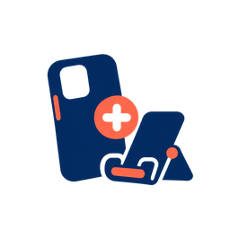
bundledéveloppement des ventesbusinessdéveloppement des ventescampaignsdéveloppement des ventesclicks—collection-autumn—confidencedéveloppement des ventes
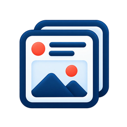
contentdéveloppement des venteseffortdéveloppement des ventesexperiments—giftsdéveloppement des ventesgoal-awareness—goal-recruitment—growth-overviewdéveloppement des ventes
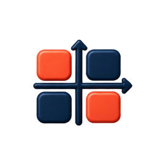
impact-effort—localdéveloppement des ventesloyaltydéveloppement des ventesneeds-attentiondéveloppement des ventesnew-arrivals—opportunitiesdéveloppement des ventes
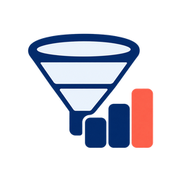
pipeline-statusdéveloppement des ventes
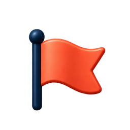
priority-highdéveloppement des ventesretargetingdéveloppement des ventesreturning-customersdéveloppement des ventes
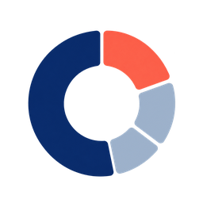
revenue-by-source—settingsdéveloppement des ventesstore-growthdéveloppement des ventesstudents—tutorial—
8. Identité, icônes d’application et assets de modules — 19
Logo, monogramme, Parle à Nordla, icônes d’installation (PWA), micro de l’écran Analyses.